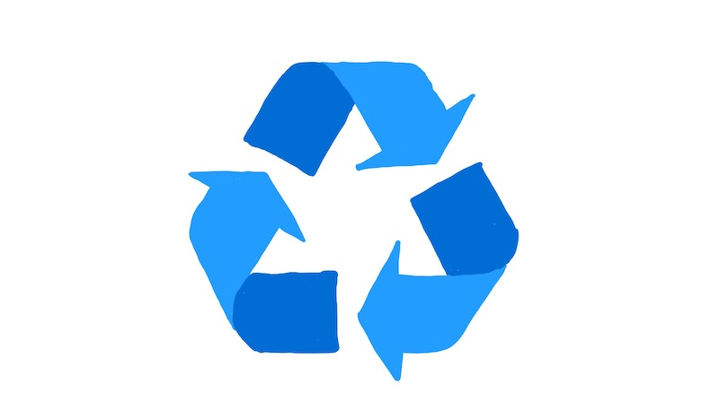

Before starting this latest incarnation of my blog, I was blogging in a couple of different places. Judging from the traffic, some of those posts still seem valuable to people so I’ve decided to move them here. That way, they won’t disappear when I shut down my older sites.
Rather than rewriting them as I would have using my most current lens, I’ve decided to just post them as-is. So, withour further ado, here are some older posts of mine...
Read more

November will bring a big change for me.
When I finish my current position, I will be taking my agile coaching and facilitation freelance.
I’m a bit nervous but also absolutely thrilled about this opportunity to use my 12 years of agile experience to help as many teams as I can.
Read more
... and get your printable “shooting target” here

Regardless of whether you use a print-out (for example using my template below :) or draw one on a whiteboard, a shooting target can be a simple but versatile tool for scoring pretty much anything in your retrospectives.
Read more
See more articles on my blog